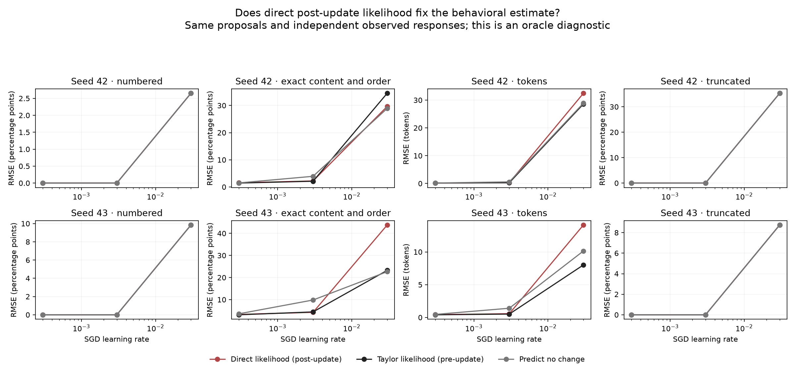

Post-update diagnostic · two Gemma-3 4B LoRA reconstructions · all 96 updates · same saved baseline responses.
We replaced the gradient approximation of a response’s likelihood change with a direct forward computation under the updated model. Everything else stays fixed: the proposal samples, behavior labels, step sizes, and independent evaluation responses. This uses access to the updated model, so it is an error diagnosis rather than a usable pre-update predictor.
Direct likelihoods do not rescue the large-update estimates. At step 0.03, copying-accuracy normalized error is 1.025 and 1.933 with direct ratios, versus 1.193 and 1.026 with full-gradient Taylor reweighting. A value of 1 is the no-change baseline. Direct ratios modestly improve one run and substantially worsen the other. Length estimates are worse than no change in both runs, and both methods miss new numbered and truncated responses entirely.
At the middle step, direct-ratio accuracy errors are 0.565 and 0.431, compared with Taylor reweighting errors of 0.537 and 0.451. Similar performance suggests that eliminating Taylor error alone is not enough on these proposal samples. The original linear gradient estimates remain 0.439 and 0.448. These are descriptive development comparisons, not independent confirmation. Template transfer is also inconsistent: at the large step its direct-ratio errors are 0.547 and 2.165; at the middle step they are 0.916 and 0.961.
The direct importance weights also reveal missing probability mass. At the largest step, the minimum empirical mean weight is about exp(−15.4) and exp(−25.0), even though the population expectation of a valid likelihood ratio is 1. This is consistent with severe finite-sample coverage failure. Direct ESS falls below 16/64 for 55% and 30% of evaluation batch–question pairs. Normalizing the remaining samples cannot invent absent response modes.
Baseline forward scores reproduce the old saved scores exactly. The largest-step Taylor log-ratio RMSE is 9.16 and 12.05 nats; after removing each question’s mean shift, it is still 2.18 and 4.64 nats. At the smallest step, discrepancies are large relative to the small actual changes; this diagnostic does not isolate floating-point effects from curvature. The next development comparison will test broader proposals and larger samples with explicit proposal-density correction.

Normalized RMSE: lower is better; 1 is the error of predicting no change. Every frozen rate appears below. All endpoints, methods, styles and batch tails are in the linked tables.
| Seed | Step | Direct SNIS | 95% descriptive interval | Taylor SNIS | Linear full gradient | Direct transfer |
|---|---|---|---|---|---|---|
| 42 | 0.0003 | 1.021 | 0.892–1.843 | 0.964 | 0.963 | 0.950 |
| 42 | 0.003 | 0.565 | 0.507–1.530 | 0.537 | 0.439 | 0.916 |
| 42 | 0.03 | 1.025 | 0.803–1.292 | 1.193 | 1.779 | 0.547 |
| 43 | 0.0003 | 0.919 | 0.840–1.290 | 0.872 | 0.870 | 0.980 |
| 43 | 0.003 | 0.431 | 0.374–0.903 | 0.451 | 0.448 | 0.961 |
| 43 | 0.03 | 1.933 | 1.230–3.443 | 1.026 | 4.126 | 2.165 |
The 1,000 pointwise bootstrap replicates resample complete proposal responses and independent evaluation responses separately, pair common evaluation streams across baseline and updates, resample questions within each template, and resample batches within style. Both direct and approximate estimators are recomputed. These intervals describe this reused development dataset; two model seeds and eight questions per template cannot establish broad reliability. Unsampled response modes remain absent in every bootstrap.
Zero numbered and truncated evaluation proposals mean all reweighting methods predict zero change for those events, including the direct oracle. A high effective sample size alone does not establish overlap with updated behaviors absent from the sample. Finite-sample normalization and response sampling noise remain even when likelihood ratios are exact within floating-point precision. Approximate Taylor likelihoods are not normalized distributions.
Both completed runs passed source, input, result, checkpoint-restoration and original-deadline checks. Direct scores use one response per forward call to match the original scoring procedure. The initial batched scoring preflight failed the unchanged numerical tolerance; its specification, code and logs were preserved, and a bounded correction was made before the plan was frozen. Duplicate trajectories are scored once per question and expanded to their original sample multiplicities.
All behavior errors and intervals · Paired comparisons · Batch tails · Likelihood error, overlap and normalization · Baseline scoring drift · Full results · Pre-reading analysis plan · Original prospective forecasts and fixed generation examples
Gradient Atoms · Frozen diagnostic code · From Importance Sampling to Doubly Robust Policy Gradient. Direct likelihood-ratio reweighting is standard importance sampling, not a novel interpretation method.